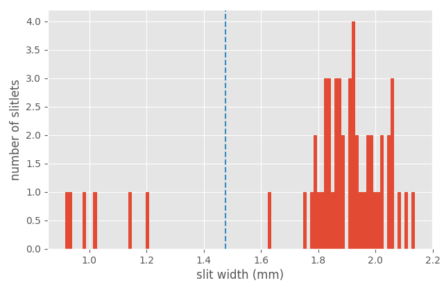
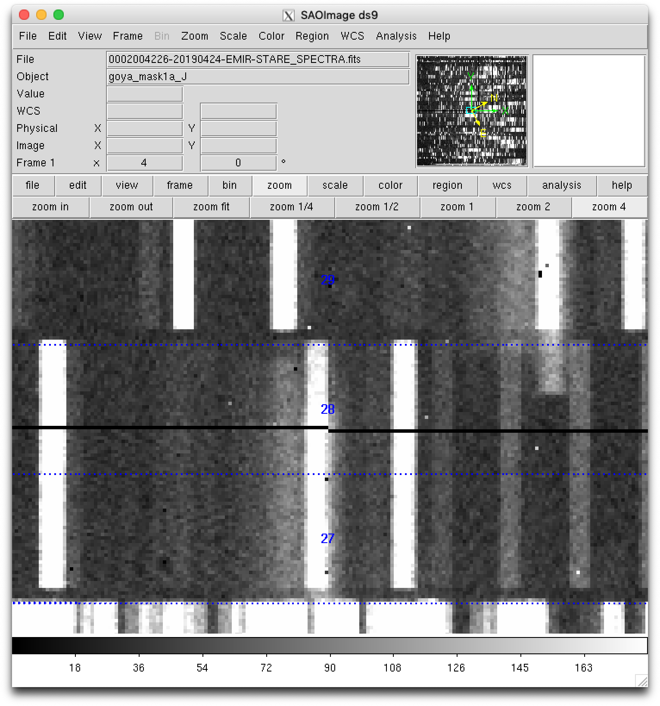
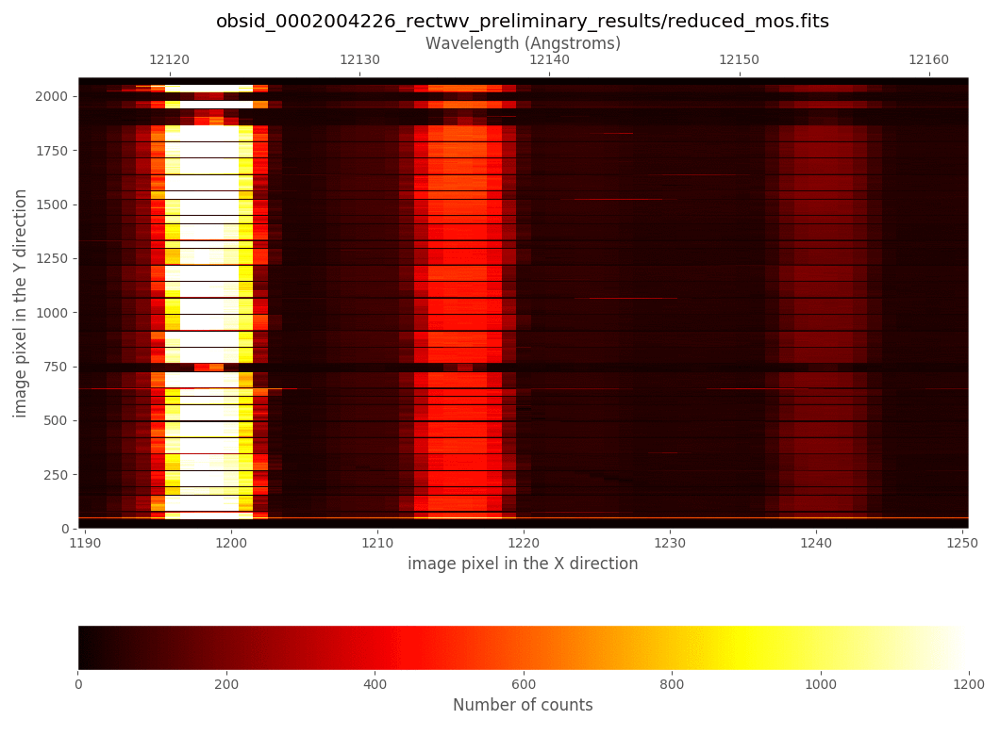

MOS example
Warning
All the commands are assumed to be executed in a terminal running the bash shell (or a compatible one).
Don’t forget to activate the same Python environment employed to install
PyEmir. In this document, the prompt (emir) $ will indicate that this
is the case.
Note
It is assumed that the reader has already followed the previous section of this tutorial Simple example: arc exposure. Some of the concepts already introduced there are not going to be repeated here with the same level of detail (or even mentioned at all!).
Let’s consider the rectification and wavelength calibration of a MOS image with slitlets configured in a non-longslit pattern. In this case, the scientific observations are deep enough to allow the use of the airglow OH lines to produce a good wavelength calibration. This means that no arc exposures are needed!
Downloading the tutorial data
Download the following file: pyemir_mos_tutorial.tgz.
If you find any trouble trying to download the previous file, try with the command line:
(emir) $ curl -O <https://guaix.fis.ucm.es/data/pyemir/pyemir_mos_tutorial_v1.tgz
Move to the directory where you have deployed the initial file tree structure containing the basic PyEmir calibration files (see Initial file tree).
Decompress there the previously mentioned tgz file:
(emir) $ tar zxvf pyemir_mos_tutorial_v1.tgz
...
...
(emir) $ rm pyemir_mos_tutorial_v1.tgz
This action should have populated the file tree with 24 science exposures
(placed wihtin the data subdirectory) and some additional auxiliary files:
(emir) $ tree
...
You can easily examine the header of the 12 science files using the astropy
utility fitsheader:
(emir) $ fitsheader data/0002004* -k object -k grism -k filter -k exptime -k date-obs -f
filename OBJECT GRISM FILTER EXPTIME DATE-OBS
------------------------------------------------ ------------- ----- ------ ---------- ----------------------
data/0002004226-20190424-EMIR-STARE_SPECTRA.fits goya_mask1a_J J J 359.986465 2019-04-25T00:40:52.36
data/0002004255-20190424-EMIR-STARE_SPECTRA.fits goya_mask1a_J J J 359.986465 2019-04-25T00:46:58.26
data/0002004284-20190424-EMIR-STARE_SPECTRA.fits goya_mask1a_J J J 359.986465 2019-04-25T00:53:02.05
data/0002004313-20190424-EMIR-STARE_SPECTRA.fits goya_mask1a_J J J 359.986465 2019-04-25T00:59:09.00
data/0002004342-20190424-EMIR-STARE_SPECTRA.fits goya_mask1a_J J J 359.986465 2019-04-25T01:05:30.72
data/0002004371-20190424-EMIR-STARE_SPECTRA.fits goya_mask1a_J J J 359.986465 2019-04-25T01:11:37.67
data/0002004400-20190424-EMIR-STARE_SPECTRA.fits goya_mask1a_J J J 359.986465 2019-04-25T01:17:41.46
data/0002004429-20190424-EMIR-STARE_SPECTRA.fits goya_mask1a_J J J 359.986465 2019-04-25T01:23:49.46
data/0002004458-20190424-EMIR-STARE_SPECTRA.fits goya_mask1a_J J J 359.986465 2019-04-25T01:30:12.23
data/0002004487-20190424-EMIR-STARE_SPECTRA.fits goya_mask1a_J J J 359.986465 2019-04-25T01:36:20.24
data/0002004516-20190424-EMIR-STARE_SPECTRA.fits goya_mask1a_J J J 359.986465 2019-04-25T01:42:24.03
data/0002004545-20190424-EMIR-STARE_SPECTRA.fits goya_mask1a_J J J 359.986465 2019-04-25T01:48:32.03
data/0002004574-20190424-EMIR-STARE_SPECTRA.fits goya_mask1a_J J J 359.986465 2019-04-25T01:54:54.80
data/0002004603-20190424-EMIR-STARE_SPECTRA.fits goya_mask1a_J J J 359.986465 2019-04-25T02:01:02.81
data/0002004632-20190424-EMIR-STARE_SPECTRA.fits goya_mask1a_J J J 359.986465 2019-04-25T02:07:06.59
data/0002004661-20190424-EMIR-STARE_SPECTRA.fits goya_mask1a_J J J 359.986465 2019-04-25T02:13:14.60
data/0002004690-20190424-EMIR-STARE_SPECTRA.fits goya_mask1a_J J J 359.986465 2019-04-25T02:19:37.37
data/0002004719-20190424-EMIR-STARE_SPECTRA.fits goya_mask1a_J J J 359.986465 2019-04-25T02:25:45.38
data/0002004748-20190424-EMIR-STARE_SPECTRA.fits goya_mask1a_J J J 359.986465 2019-04-25T02:31:49.16
data/0002004777-20190424-EMIR-STARE_SPECTRA.fits goya_mask1a_J J J 359.986465 2019-04-25T02:37:57.17
data/0002004806-20190424-EMIR-STARE_SPECTRA.fits goya_mask1a_J J J 359.986465 2019-04-25T02:44:19.93
data/0002004835-20190424-EMIR-STARE_SPECTRA.fits goya_mask1a_J J J 359.986465 2019-04-25T02:50:27.94
data/0002004864-20190424-EMIR-STARE_SPECTRA.fits goya_mask1a_J J J 359.986465 2019-04-25T02:56:31.73
data/0002004893-20190424-EMIR-STARE_SPECTRA.fits goya_mask1a_J J J 359.986465 2019-04-25T03:02:40.79
It is also useful to display additional FITS keywords that store relevant information concerning the observation strategy:
(emir) $ fitsheader data/0002004*fits -k OBSBLOCK -k NIMGOBBL -k IMGOBBL -k NFRSEC -k FRSEC -k READMODE -f
filename OBSBLOCK NIMGOBBL IMGOBBL NFRSEC FRSEC READMODE
------------------------------------------------ -------- -------- ------- ------ ----- --------
data/0002004226-20190424-EMIR-STARE_SPECTRA.fits 1 4 1 28 0 RAMP
data/0002004255-20190424-EMIR-STARE_SPECTRA.fits 1 4 2 28 0 RAMP
data/0002004284-20190424-EMIR-STARE_SPECTRA.fits 1 4 3 28 0 RAMP
data/0002004313-20190424-EMIR-STARE_SPECTRA.fits 1 4 4 28 0 RAMP
data/0002004342-20190424-EMIR-STARE_SPECTRA.fits 2 4 1 28 0 RAMP
data/0002004371-20190424-EMIR-STARE_SPECTRA.fits 2 4 2 28 0 RAMP
data/0002004400-20190424-EMIR-STARE_SPECTRA.fits 2 4 3 28 0 RAMP
data/0002004429-20190424-EMIR-STARE_SPECTRA.fits 2 4 4 28 0 RAMP
data/0002004458-20190424-EMIR-STARE_SPECTRA.fits 3 4 1 28 0 RAMP
data/0002004487-20190424-EMIR-STARE_SPECTRA.fits 3 4 2 28 0 RAMP
data/0002004516-20190424-EMIR-STARE_SPECTRA.fits 3 4 3 28 0 RAMP
data/0002004545-20190424-EMIR-STARE_SPECTRA.fits 3 4 4 28 0 RAMP
data/0002004574-20190424-EMIR-STARE_SPECTRA.fits 4 4 1 28 0 RAMP
data/0002004603-20190424-EMIR-STARE_SPECTRA.fits 4 4 2 28 0 RAMP
data/0002004632-20190424-EMIR-STARE_SPECTRA.fits 4 4 3 28 0 RAMP
data/0002004661-20190424-EMIR-STARE_SPECTRA.fits 4 4 4 28 0 RAMP
data/0002004690-20190424-EMIR-STARE_SPECTRA.fits 5 4 1 28 0 RAMP
data/0002004719-20190424-EMIR-STARE_SPECTRA.fits 5 4 2 28 0 RAMP
data/0002004748-20190424-EMIR-STARE_SPECTRA.fits 5 4 3 28 0 RAMP
data/0002004777-20190424-EMIR-STARE_SPECTRA.fits 5 4 4 28 0 RAMP
data/0002004806-20190424-EMIR-STARE_SPECTRA.fits 6 4 1 28 0 RAMP
data/0002004835-20190424-EMIR-STARE_SPECTRA.fits 6 4 2 28 0 RAMP
data/0002004864-20190424-EMIR-STARE_SPECTRA.fits 6 4 3 28 0 RAMP
data/0002004893-20190424-EMIR-STARE_SPECTRA.fits 6 4 4 28 0 RAMP
The last summary shows that:
OBSBLOCK: (counter of the block sequence) runs from 1 to 6NIMGOBBL=4(requested number of images per observing block): each block correspond to a typical ABBA dithering pattern along the slit.IMGOBBL(counter of the image sequence) runs from 1 to 4 within each block.NFRSEC=28(frames produced per detector exposure): note thatREADMODE=RAMP, so 28 reads are performed in each exposure. Note that these frames are what GTC calls raw frames: each one of them corresponds to a single read in the ramp. These files are provided by GTC with the suffix*_raw.fits. The images we are reducing here are the result of the fit of ramps to the collection of 28 reads (in each detector pixel). In this tutorial we are using the adjective raw to refer to the latter FITS images resulting from the ramp fitting process.FRSEC=0(counter of the frame sequence): in this case, a value of0indicates that the FITS image is the result of the ramp fitting process. In the individual FITS images*_raw.fits(not provided), corresponding to each detector read, this keyword runs from 1 to 28.
In summary, the 24 science images provided correspond to 6 ABBA blocks.
Have a look to any of these images. For that purpose you can use ds9 or
the visualization tool provided with numina:
(emir) $ numina-ximshow data/0002004226-20190424-EMIR-STARE_SPECTRA.fits
{kind=link}
The CSU configuration
It is clear from the previous figure that the EMIR slitlets were not configured in longslit mode, but in MOS mode. In addition, it is important to highlight that not all the slitlets were opened (i.e., the slits not assigned to a particular scientific target were closed in order to avoid spurious spectra in the image; note that even for the closed slitlets the corresponding CSU bars are not completely closed to avoid collisions)
The slitlet configuration can be easily displayed with the help of the
auxiliary PyEmir script pyemir-display_slitlet_arrangement (please, note
the use in this case of the additional parameter --n_clusters 2):
(emir) $ pyemir-display_slitlet_arrangement \
data/0002004226-20190424-EMIR-STARE_SPECTRA.fits \
--n_clusters 2 --longslits
...
...
---> separator: 1.475
{kind=link}
The first figure displays the slitlet arrangement.
{kind=link}
Note that in this case we have employed the parameter --n_clusters 2, that
forces the script to display a histogram of slitlet widths, and to compute two
clusters and a separating value (in this case 1.475 mm) which classifies the
slitlets in two groups: slitlets closed (widths < 1.475 mm) and opened (width >
1.475 mm). This number will be used later.
Preliminary rectification and wavelength calibration using OH lines
As explained in Simple example: arc exposure, the rectification and wavelength calibration of any EMIR spectroscopic image can be obtained with two levels of quality:
preliminary calibration: without auxiliary calibration images, computed from the empirical calibration derived by the instrument team.
refined calibration: that refines the empirical calibration by making use of either additional calibration images (i.e., arcs) or by using the airglow (OH) emission lines. The latter approach is going to be used in this example.
The refinement process requires an initial estimation of the offsets in the spatial (Y axis) and spectral (X axis) directions between the empirical calibration and the actual data. These two offsets can be easily estimated after computing the preliminary calibration.
At this point we are going to describe a new auxiliary script
pyemir-generate_yaml_for_abba (not available in previous PyEmir versions)
which helps to create the observation result files required to execute the
reduction recipes. This is an excellent alternative to the manual edition and
writing of this kind of files.
Before using the auxiliary script, one needs to generate a simple text file,
arbitrarily named list_abba.txt,
with the list of scientific images (note that the list of files is generated
within the data subdirectory to avoid having the subdirectory name in front
of the file name):
(emir) $ cd data
(emir) $ ls 0002004*fits > list_abba.txt
(emir) $ cat list_abba.txt
0002004226-20190424-EMIR-STARE_SPECTRA.fits
0002004255-20190424-EMIR-STARE_SPECTRA.fits
0002004284-20190424-EMIR-STARE_SPECTRA.fits
0002004313-20190424-EMIR-STARE_SPECTRA.fits
0002004342-20190424-EMIR-STARE_SPECTRA.fits
0002004371-20190424-EMIR-STARE_SPECTRA.fits
0002004400-20190424-EMIR-STARE_SPECTRA.fits
0002004429-20190424-EMIR-STARE_SPECTRA.fits
0002004458-20190424-EMIR-STARE_SPECTRA.fits
0002004487-20190424-EMIR-STARE_SPECTRA.fits
0002004516-20190424-EMIR-STARE_SPECTRA.fits
0002004545-20190424-EMIR-STARE_SPECTRA.fits
0002004574-20190424-EMIR-STARE_SPECTRA.fits
0002004603-20190424-EMIR-STARE_SPECTRA.fits
0002004632-20190424-EMIR-STARE_SPECTRA.fits
0002004661-20190424-EMIR-STARE_SPECTRA.fits
0002004690-20190424-EMIR-STARE_SPECTRA.fits
0002004719-20190424-EMIR-STARE_SPECTRA.fits
0002004748-20190424-EMIR-STARE_SPECTRA.fits
0002004777-20190424-EMIR-STARE_SPECTRA.fits
0002004806-20190424-EMIR-STARE_SPECTRA.fits
0002004835-20190424-EMIR-STARE_SPECTRA.fits
0002004864-20190424-EMIR-STARE_SPECTRA.fits
0002004893-20190424-EMIR-STARE_SPECTRA.fits
(emir) $ cd ..
Generate the observation result file to perform a preliminary rectification and wavelength calibration:
(emir) $ pyemir-generate_yaml_for_abba data/list_abba.txt \
--step 0 --npreliminary 4 --outfile 0_rectwv_preliminary.yaml
Expected sequence pattern: ABBA
Number of sequences......: 6
Full set of images.......: ABBAABBAABBAABBAABBAABBA
--> File 0_rectwv_preliminary.yaml generated!
Note that the first argument after the name of the script in the text file containing the list of scientific images. The rest of the arguments are:
--step 0: this number indicates the kind of observation result file that is going to be generated. The different options are0(initial rectification and wavelength calibration),1(refined rectificacion and wavelength calibration),2(fast reduction of ABBA observations), and3(careful reduction of ABBA observations). At this point we are interested in the initial calibration. The other options are going to be described later.--npreliminary 4: although we have a total of 24 scientific images the initial rectification and wavelength calibration coefficients will be computed for the combined result of the first 4 images (i.e., the first ABBA sequence). We could use the 24 images in the combination but, since it is possible that the images exhibit small offsets as a function of time, it is safer to use a smaller bunch of files. The OH lines in these images are bright enough to provide a good wavelength calibration even in a single exposure.--outfile 0_rectwv_preliminary.yaml: indicates the name chosen for the observation result file. This file (shown below) has a single block making use of the reduction recipeGENERATE_RECTWV_COEFF:1id: _0002004226_rectwv_preliminary 2instrument: EMIR 3mode: GENERATE_RECTWV_COEFF 4frames: 5 - 0002004226-20190424-EMIR-STARE_SPECTRA.fits 6 - 0002004255-20190424-EMIR-STARE_SPECTRA.fits 7 - 0002004284-20190424-EMIR-STARE_SPECTRA.fits 8 - 0002004313-20190424-EMIR-STARE_SPECTRA.fits 9enabled: True
At this point, the preliminary rectification and wavelength calibration can be carried out:
(emir) numina run 0_rectwv_preliminary.yaml --link-files -r control.yaml
...
...
As expected, two new subdirectories have been created:
obsid_0002004226_rectwv_preliminary_resultsobsid_0002004226_rectwv_preliminary_work
(emir) $ numina-ximshow \
obsid_0002004226_rectwv_preliminary_results/reduced_mos.fits
{kind=link}
Refined rectification and wavelength calibration
Although the rectified and wavelength calibration image that we have just obtained appears to be fine, looking in detail it is possible to realize that both the absolute and relative wavelength calibration between slitlets are still not perfect, and that there exists a small offset between the expected and the observed slitlet frontiers. Fortunately, both problems can be easily solved.
Two approaches are possible:
Manual determination of X and Y offsets: We can proceed following the same process previously described in Simple example: arc exposure.
Automatic determination of X and Y offsets: The fact that the scientific images correspond to a real MOS observation, and not a longslit observation performed by alignining the slitlets, facilitates the use of 2D cross-correlation to estimate the offsets between the expected and the observed image distortions. Note that if the slitlets are aligned to simulate a longslit, the cross-correlation in the vertical direction is unable to determine the vertical offset.
In this tutorial we are describing both approaches.
Manual determination of X and Y offsets
Note
As described in Simple example: arc exposure, the task of visually finding the
offsets can be performed with either the auxiliary PyEmir script
pyemir-overplot_boundary_model, or by using ds9 with the auxiliary
ds9-region files created during the preliminary rectification and wavelength
calibration reduction. In the following two subsections we are using the
latter option.
Checking the spatial direction (Y axis)
The offset in the spatial direction (Y axis) can be estimated by plotting the
expected slitlet frontiers (file ds9_frontiers_rawimage.reg placed within
the subdirectory obsid_0002004226_rectwv_preliminary_work), derived in the
preliminary rectification and wavelength calibration, over the raw image:
(emir) $ ds9 data/0002004226-20190424-EMIR-STARE_SPECTRA.fits &
select
scale --> zscaleselect
region --> load --> obsid_0002004226_rectwv_preliminary_work/ds9_frontiers_rawimage.reg
{kind=link}
Zooming:
{kind=link}
From this visual examination one concludes that global_integer_offset_y_pix:
-3. Note that the sign of the offset is chosen to align the actual data
with the predicted frontiers (displayed with dotted blue lines).
Checking the wavelength direction (X axis)
Warning
The refinement process here described is based on the use of airglow (OH) emission lines in the science frames. This assumes that airglow emission is much brighter than the target spectra. If this is not the case (for example when observing bright sources with short exposure times), the user should employ calibration arc images obtained before and/or after the science images. The refinement process should then be carried out as described in Simple example: arc exposure.
Continuing with the same ds9 interface, overplot the expected location of
the airglow (OH) emission lines:
select
region --> load --> obsid_0002004226_rectwv_preliminary_work/ds9_oh_rawimage.reg
{kind=link}
Note that the location of only the brightest OH lines are displayed. The visual
examination reveals that in this case global_integer_offset_x_pix: 1. Note
that the sign of the offset is chosen to place the observed OH lines on the
predicted locations (displayed in cyan and magenta for the odd- and
even-numbered slitlets, respectively).
Improving the rectification and wavelength calibration
We are ready to obtain the refined rectification and wavelength calibration coefficients using the integer offsets previously estimated. For that purpose it is advisable to make use of the same auxiliary script that we used before:
(emir) $ pyemir-generate_yaml_for_abba data/list_abba.txt \
--step 1 \
--refine_wavecalib_mode 12 \
--minimum_slitlet_width_mm 1.475 \
--maximum_slitlet_width_mm 3.0 \
--global_integer_offset_x_pix 1 \
--global_integer_offset_y_pix -3 \
--rectwv_combined \
--outfile 1_rectwv_combined.yaml
Expected sequence pattern: ABBA
Number of sequences......: 6
Full set of images.......: ABBAABBAABBAABBAABBAABBA
--> File 1_rectwv_combined.yaml generated!
Note that in this case the following arguments have been used:
--step 1: this indicates that the reduction recipeGENERATE_RECTWV_COEFFmust carry out a refined estimation of the rectification and wavelength calibration coefficients.--refine_wavecalib_mode 12: this indicates that the image corresponds to a science exposure, deep enough to detect OH sky lines, and that we are asking for a refinement of the wavelength calibration using that information. Note that if we were using an arc image, this parameter should be set to 2 instead of 12 (as described in Simple example: arc exposure).--minimum_slitlet_width_mm 1.475and--maximum_slitlet_width_mm 3.0: minimum and maximum slitlet widths (mm) for a slitlet to be considered as a scientific slitlet. Note that these numbers are compatible with the histogram of slitlet widths that we have obtained previously usingpyemir-display_slitlet_arrangementwith the parameter--n_clusters 2. Only the slitlets which width was set within the specified range will be employed to derive a median sky spectrum (needed for the cross-correlation algorithm that is taking place during the refinement process). This allows to skip unused slitlets which could introduce noise in the cross-correlation method employed in the wavelength direction.--global_integer_offset_x_pix 1and--global_integer_offset_y_pix -3: these are the offsets between the raw images and the expected empirical calibration, estimated as previously described.--rectwv_combinedis just a flag (i.e. it is present or not, but has no associated value). This flag is very important: when present it indicates that all the images will be combined in a single image before computing the refined rectification and wavelength calibration coefficients. This implies that the calibration coefficients filerectwv_coeff.jsonwill be the same for all the images. When the are offsets in the location of the OH lines (X direction) or in the location of the slitlet frontiers (Y direction), this flat must not be present. In this latter scenario, an individual rectification and wavelength calibration coefficients filerectwv_coeff.jsonwill be generated for each individual image.--outfile 1_rectwv_combined.yamlindicates the name chosen for the observation result file. This file (shown below) has a single block making use of the reduction recipeGENERATE_RECTWV_COEFF:
1id: _0002004226_rectwv_combined
2instrument: EMIR
3mode: GENERATE_RECTWV_COEFF
4frames:
5 - 0002004226-20190424-EMIR-STARE_SPECTRA.fits
6 - 0002004255-20190424-EMIR-STARE_SPECTRA.fits
7 - 0002004284-20190424-EMIR-STARE_SPECTRA.fits
8 - 0002004313-20190424-EMIR-STARE_SPECTRA.fits
9 - 0002004342-20190424-EMIR-STARE_SPECTRA.fits
10 - 0002004371-20190424-EMIR-STARE_SPECTRA.fits
11 - 0002004400-20190424-EMIR-STARE_SPECTRA.fits
12 - 0002004429-20190424-EMIR-STARE_SPECTRA.fits
13 - 0002004458-20190424-EMIR-STARE_SPECTRA.fits
14 - 0002004487-20190424-EMIR-STARE_SPECTRA.fits
15 - 0002004516-20190424-EMIR-STARE_SPECTRA.fits
16 - 0002004545-20190424-EMIR-STARE_SPECTRA.fits
17 - 0002004574-20190424-EMIR-STARE_SPECTRA.fits
18 - 0002004603-20190424-EMIR-STARE_SPECTRA.fits
19 - 0002004632-20190424-EMIR-STARE_SPECTRA.fits
20 - 0002004661-20190424-EMIR-STARE_SPECTRA.fits
21 - 0002004690-20190424-EMIR-STARE_SPECTRA.fits
22 - 0002004719-20190424-EMIR-STARE_SPECTRA.fits
23 - 0002004748-20190424-EMIR-STARE_SPECTRA.fits
24 - 0002004777-20190424-EMIR-STARE_SPECTRA.fits
25 - 0002004806-20190424-EMIR-STARE_SPECTRA.fits
26 - 0002004835-20190424-EMIR-STARE_SPECTRA.fits
27 - 0002004864-20190424-EMIR-STARE_SPECTRA.fits
28 - 0002004893-20190424-EMIR-STARE_SPECTRA.fits
29requirements:
30 refine_wavecalib_mode: 12
31 minimum_slitlet_width_mm: 1.475
32 maximum_slitlet_width_mm: 3.0
33 global_integer_offset_x_pix: 1
34 global_integer_offset_y_pix: -3
35enabled: True
This file contains a single block with the 12 images. The requirements
section appears with the parameters employed when invoking the script
pyemir-generate_yaml_for_abba.
Execute the reduction recipe:
(emir) $ numina run 1_rectwv_combined.yaml --link-files -r control.yaml
...
...
As expected, two new subdirectories have been created:
obsid_0002004226_rectwv_combined_work: temporary subdirectory where all the relevant files have been copied (or linked), and where the auxiliaryds9region lines have been stored.obsid_0002004226_rectwv_combined_results: subdirectory where the results of the recipe are saved. In this case:(emir) $ tree obsid_0002004226_rectwv_combined_results/ obsid_0002004226_rectwv_combined_results/ ├── processing.log ├── rectwv_coeff.json ├── reduced_mos.fits ├── result.json └── task.json
The interesting files here are
rectwv_coeff.json, containing the refined rectification and wavelength calibration coefficients, andreduced_mos.fits, which is the rectified and wavelength calibrated image corresponding to the combination of all the images listed under the keywordframes:(line 4) in the observation result file1_rectwv_combined.yaml.
Warning
The refined rectification and wavelength calibration has been saved in the
file rectwv_coeff.json stored in the
obsid_0002004226_rectwv_combined_results subdirectory. This file can be
applied, as described below, to any raw image (with the same CSU
configuration).
The file rectwv_coeff.json is stored in JSON format, and contains all
the relevant information necessary to carry out the rectification and
wavelength calibration of any image.
Note: JSON is an open-standard file format that uses human readable text to transmit data objects (see details in JSON description).
We can have a look to the reduced image:
(emir) $ numina-ximshow obsid_0002004226_rectwv_combined_results/reduced_mos.fits
{kind=link}
Comparing this new result with the preliminary rectified and wavelength calibrated image shows that, apart from a global offset in the wavelength calibration, the OH lines are much more aligned when moving along the spatial direction:
{kind=link}
It is also possible to display the synthetic image, generated during the execution of the reduction recipe, with the expected location of the airglow (OH) lines (line intensities are normalized in the range from 0.0 to 1.0):
(emir) $ numina-ximshow obsid_0002004226_rectwv_combined_work/expected_catalog_lines.fits \
--z1z2 0,0.3
{kind=link}
In the obsid_0002004226_rectwv_combined_work subdirectory you can also find
a file named crosscorrelation.pdf which contains a graphical summary of the
cross-correlation process in the wavelength direction for each useful slitlet.
A few pages of that file are the following:
{kind=link}
{kind=link}
{kind=link}
{kind=link}
Summary: the final wavelength calibration applied to each slitlet differs from the preliminary wavelength calibration, and incorporates the two refinements displayed in the previous plots:
Refinement #1: global offset of each spectrum, computed using the crosscorrelation method.
Refinement #2: systematic offset with wavelength, displayed as the straight line fit (blue line) in the plot representing offset vs. wavelength. This is a second order correction but it should provide an unbiased absolute wavelength calibration in the whole wavelength range. The robust standard deviation is a good proxy for the expected standard deviation of the wavelength calibration, and it should be a fraction of
CDELT1.
Automatic determination of X and Y offsets
As previously mentioned, the integer offsets in X and Y, that we have estimated before with some effort, can be automatically determined by PyEmir when the spectroscopic images correspond to MOS observations with the slitlets not following a longslit pattern.
In order to use this option, copy the previous observation result file and introduce the changes that are described next:
(emir) $ cp 1_rectwv_combined.yaml 1_rectwv_combined_auto.yaml
(emir) $ edit 1_rectwv_combined_auto.yaml
...
1id: _0002004226_rectwv_combined_auto
2instrument: EMIR
3mode: GENERATE_RECTWV_COEFF
4frames:
5 - 0002004226-20190424-EMIR-STARE_SPECTRA.fits
6 - 0002004255-20190424-EMIR-STARE_SPECTRA.fits
7 - 0002004284-20190424-EMIR-STARE_SPECTRA.fits
8 - 0002004313-20190424-EMIR-STARE_SPECTRA.fits
9 - 0002004342-20190424-EMIR-STARE_SPECTRA.fits
10 - 0002004371-20190424-EMIR-STARE_SPECTRA.fits
11 - 0002004400-20190424-EMIR-STARE_SPECTRA.fits
12 - 0002004429-20190424-EMIR-STARE_SPECTRA.fits
13 - 0002004458-20190424-EMIR-STARE_SPECTRA.fits
14 - 0002004487-20190424-EMIR-STARE_SPECTRA.fits
15 - 0002004516-20190424-EMIR-STARE_SPECTRA.fits
16 - 0002004545-20190424-EMIR-STARE_SPECTRA.fits
17 - 0002004574-20190424-EMIR-STARE_SPECTRA.fits
18 - 0002004603-20190424-EMIR-STARE_SPECTRA.fits
19 - 0002004632-20190424-EMIR-STARE_SPECTRA.fits
20 - 0002004661-20190424-EMIR-STARE_SPECTRA.fits
21 - 0002004690-20190424-EMIR-STARE_SPECTRA.fits
22 - 0002004719-20190424-EMIR-STARE_SPECTRA.fits
23 - 0002004748-20190424-EMIR-STARE_SPECTRA.fits
24 - 0002004777-20190424-EMIR-STARE_SPECTRA.fits
25 - 0002004806-20190424-EMIR-STARE_SPECTRA.fits
26 - 0002004835-20190424-EMIR-STARE_SPECTRA.fits
27 - 0002004864-20190424-EMIR-STARE_SPECTRA.fits
28 - 0002004893-20190424-EMIR-STARE_SPECTRA.fits
29requirements:
30 refine_wavecalib_mode: 12
31 minimum_slitlet_width_mm: 1.475
32 maximum_slitlet_width_mm: 3.0
33 global_integer_offset_x_pix: 0
34 global_integer_offset_y_pix: 0
35 global_integer_offsets_mode: auto
36enabled: True
Changes in 1_rectwv_combined_auto.yaml in comparison with
1_rectwv_combined.yaml:
Line 1: the suffix
_autohas been added to the blockidLines 33 and 34: both integer global offsets have been set to 0 (they are going to be estimated automatically!)
Insert the new line 35, indicating
global_integer_offsets_mode: auto. This is the important keyword here: we are indicating that the integer global offsets should be computed automatically. In this sense, the previous two keywordsglobal_integer_offset_x_pix:andglobal_interger_offset_y_pixmust have been set to zero (or you’ll get an error otherwise).
Execute the reduction recipe:
(emir) $ numina run 1_rectwv_combined_auto.yaml --link-files -r control.yaml
...
...
The reduction now includes the generation of a synthetic image with the
expected location of the OH lines. This image is stored in the
obsid_0002004226_rectwv_combined_auto_work subdirectory with the name
synthetic_raw_image.fits.
{kind=link}
{kind=link}
The automatic procedure has determined the following offset values:
global_integer_offset_x_pix: 1global_integer_offset_y_pix: -3
These numbers are the same as the ones that we estimated previously. For that reason, the resulting refined rectification and wavelength calibrations coefficients are the same:
(emir) $ diff \
obsid_0002004226_rectwv_combined_auto_results/rectwv_coeff.json \
obsid_0002004226_rectwv_combined_results/rectwv_coeff.json
8c8
< "uuid": "1139443e-99db-11e9-b393-3c15c2e3dc50",
---
> "uuid": "aca6d82e-99da-11e9-abf7-3c15c2e3dc50",
18c18
< "creation_date": "2019-06-28T19:29:37.736426",
---
> "creation_date": "2019-06-28T19:26:49.004673",
Note that the contents of both files are identical except for the unique
uuid (that identifies each particular calibration) and the
creation_date.
Fast ABBA combination
The reduction recipe `` ABBA_SPECTRA_FAST_RECTWV`` performs a fast ABBA combination since it employs a single rectification and wavelength calibration solution for all the individual images. For that reason, all the A images in the ABBA sequences can be combined before rectification and wavelength calibration. The same occurs with the B images. The resulting A minus B combination is then rectified and wavelength calibrated (i.e., the rectification and wavelength calibration process is carried out only once).
Note that this recipe assumes that the images listed in the file
data/list_abba.txt follow an ABBA pattern.
(emir) $ pyemir-generate_yaml_for_abba data/list_abba.txt \
--step 2 --rectwv_combined --outfile 2_abba_fast.yaml
Expected sequence pattern: ABBA
Number of sequences......: 6
Full set of images.......: ABBAABBAABBAABBAABBAABBA
--> File 2_abba_fast.yaml generated!
The observation result file 2_abba_fast.yaml has the following content:
1id: _abba_fast
2instrument: EMIR
3mode: ABBA_SPECTRA_FAST_RECTWV
4frames:
5 - 0002004226-20190424-EMIR-STARE_SPECTRA.fits
6 - 0002004255-20190424-EMIR-STARE_SPECTRA.fits
7 - 0002004284-20190424-EMIR-STARE_SPECTRA.fits
8 - 0002004313-20190424-EMIR-STARE_SPECTRA.fits
9 - 0002004342-20190424-EMIR-STARE_SPECTRA.fits
10 - 0002004371-20190424-EMIR-STARE_SPECTRA.fits
11 - 0002004400-20190424-EMIR-STARE_SPECTRA.fits
12 - 0002004429-20190424-EMIR-STARE_SPECTRA.fits
13 - 0002004458-20190424-EMIR-STARE_SPECTRA.fits
14 - 0002004487-20190424-EMIR-STARE_SPECTRA.fits
15 - 0002004516-20190424-EMIR-STARE_SPECTRA.fits
16 - 0002004545-20190424-EMIR-STARE_SPECTRA.fits
17 - 0002004574-20190424-EMIR-STARE_SPECTRA.fits
18 - 0002004603-20190424-EMIR-STARE_SPECTRA.fits
19 - 0002004632-20190424-EMIR-STARE_SPECTRA.fits
20 - 0002004661-20190424-EMIR-STARE_SPECTRA.fits
21 - 0002004690-20190424-EMIR-STARE_SPECTRA.fits
22 - 0002004719-20190424-EMIR-STARE_SPECTRA.fits
23 - 0002004748-20190424-EMIR-STARE_SPECTRA.fits
24 - 0002004777-20190424-EMIR-STARE_SPECTRA.fits
25 - 0002004806-20190424-EMIR-STARE_SPECTRA.fits
26 - 0002004835-20190424-EMIR-STARE_SPECTRA.fits
27 - 0002004864-20190424-EMIR-STARE_SPECTRA.fits
28 - 0002004893-20190424-EMIR-STARE_SPECTRA.fits
29requirements:
30 pattern: ABBA
31 rectwv_coeff: ../obsid_0002004226_rectwv_combined_results/rectwv_coeff.json
32 method: sigmaclip
33 method_kwargs:
34 low: 3.0
35 high: 3.0
36 voffset_pix: 0.0
37enabled: True
The requirements section (lines 29-36) is now different:
pattern: indicates that the images in theframessections correspond to ABBA sequences. That means that the total number of images must be an interger multiple of 4.rectwv_coeff: the value that appears here is the expected file name for the rectification and wavelength calibration coefficients of the first image. Since the calibrations are assumed to be placed within thedatasubdirectory, note that the path of this calibration starts with a../in order to indicate that the calibration is not in the default place but in theresultssubdirectory corresponding to the reduction of a particular image Another alternative is to copy thatrectwv_json.fileinto thedatasubdirectory, in which case you do not need to include any path (note that in this case it is advisable to rename the json file to avoid name collisions with similar calibration files).method: combination method. The three available possibilities aresigmaclip,meanandmedian.method_kwargs: additional parameters that control the behavior of the combination method. These options are only available for thesigmaclipmethod, where the user can set thelowandhighrejection limits (in units of the standard deviation).voffset_pix: indicates the offset (in pixels) between the A and B images. Leaving this number as zero means that no attempt to merge the A and B images is going to be performed.
(emir) $ numina run 2_abba_fast.yaml --link-files -r control.yaml
Two results are produced by this recipe (see subdirectory
obsid_abba_fast_results):
reduced_mos_abba.fits: computed as the sum of all the A images minus the sum of all the B images. This image should exhibit A spectra with positive signal (white) and B spectra with negative signal (black).reduced_mos_abba_combined.fits: in this image the coadded A and B spectra are combined by multiplying the coadded B spectra inreduced_mos_abba.fitsby minus one (in order to obtain spectra with positive signal), shifting the result along the spatial direction byvoffset_pixpixels, and summing the coadded A spectra. Whenvoffset_pix=0this image is empty.
{kind=link}
Making a zoom in the resulting combined image, we estimate that the vertical
offsets between A and B spectra (white and black, respectively) is around 38
pixels. We can introduce this number in the requirement voffset_pix:
(emir) $ cp 2_abba_fast.yaml 2_abba_fast_bis.yaml
(emir) $ edit 2_abba_fast_bis.yaml
...
We modify the label in line 1 (adding the suffix _bis), and set the
vertical offset to 38 pixels in line 36:
1id: _abba_fast_bis
2instrument: EMIR
3mode: ABBA_SPECTRA_FAST_RECTWV
4frames:
5 - 0002004226-20190424-EMIR-STARE_SPECTRA.fits
6 - 0002004255-20190424-EMIR-STARE_SPECTRA.fits
7 - 0002004284-20190424-EMIR-STARE_SPECTRA.fits
8 - 0002004313-20190424-EMIR-STARE_SPECTRA.fits
9 - 0002004342-20190424-EMIR-STARE_SPECTRA.fits
10 - 0002004371-20190424-EMIR-STARE_SPECTRA.fits
11 - 0002004400-20190424-EMIR-STARE_SPECTRA.fits
12 - 0002004429-20190424-EMIR-STARE_SPECTRA.fits
13 - 0002004458-20190424-EMIR-STARE_SPECTRA.fits
14 - 0002004487-20190424-EMIR-STARE_SPECTRA.fits
15 - 0002004516-20190424-EMIR-STARE_SPECTRA.fits
16 - 0002004545-20190424-EMIR-STARE_SPECTRA.fits
17 - 0002004574-20190424-EMIR-STARE_SPECTRA.fits
18 - 0002004603-20190424-EMIR-STARE_SPECTRA.fits
19 - 0002004632-20190424-EMIR-STARE_SPECTRA.fits
20 - 0002004661-20190424-EMIR-STARE_SPECTRA.fits
21 - 0002004690-20190424-EMIR-STARE_SPECTRA.fits
22 - 0002004719-20190424-EMIR-STARE_SPECTRA.fits
23 - 0002004748-20190424-EMIR-STARE_SPECTRA.fits
24 - 0002004777-20190424-EMIR-STARE_SPECTRA.fits
25 - 0002004806-20190424-EMIR-STARE_SPECTRA.fits
26 - 0002004835-20190424-EMIR-STARE_SPECTRA.fits
27 - 0002004864-20190424-EMIR-STARE_SPECTRA.fits
28 - 0002004893-20190424-EMIR-STARE_SPECTRA.fits
29requirements:
30 pattern: ABBA
31 rectwv_coeff: ../obsid_0002004226_rectwv_combined_results/rectwv_coeff.json
32 method: sigmaclip
33 method_kwargs:
34 low: 3.0
35 high: 3.0
36 voffset_pix: 38
37enabled: True
Execute the again the same reduction recipe but using the new observation result file:
(emir) $ numina run 2_abba_fast_bis.yaml --link-files -r control.yaml
Since we have provided a non-zero value for voffset_pix, the image
reduced_mos_abba_combined.fits is not empty but contains the proper
coaddition of all the A and B spectra. All the targets that have been properly
observed in the A and the B images should appear here three times: two in
negative (black spectra) and one in positive (white spectrum in between the
black ones).
{kind=link}
Warning
It is important to keep in mind how the signal in the combined images has been scaled:
reduced_mos_abba.fits: each target spectrum should appear twice: one in positive (white) and one in negative (black). The signal in both spectra must have a similar number of counts. Each spectrum has the signal corresponding toEXPTIME.reduced_mos_abba_combined.fits: each target spectrum should appear three times: one in positive (white) and two in negative (black; at both sides of the positive spectrum). The signal in the white spectrum (which is the combination of the A and B spectra in the previous imagereduced_mos_abba.fits) corresponds toEXPTIME. This means that the signal in each of the negative spectrum has been scaled toEXPTIME/2.
Careful ABBA combination
In the previous combination we have assumed that in all the A images the targets were in exactly the same location in the slitlets. The same was assumed for the B images.
However, it is possible to check whether this was actually the case by looking in detail at some bright sources. For example, in these observations, 4 stars were employed to align the CSU on sky. The brightest one was placed in slitlet number 2. Let’s select all the A images and display a zoom around this slitlet region:
(emir) $ list_a=`fitsheader data/0002004*.fits -k IMGOBBL -f | awk '$2 == 1 || $2 == 4 {print $1}'`
(emir) $ numina-ximshow $list_a \
--bbox 86,2047,9,70 \
--z1z2 0,1100 \
--pdffile brightspectrum_a.pdf \
--keystitle ra,dec,rotang."RA: %s, DEC: %s, rotang: %5.2f"
The first command defines the list of images for which the keyword IMGOBBL
is either 1 or 4 (A images). The second command generates a PDF file in which
a zoom around slitlet number 2 is displayed for all the selected images.
{kind=link}
It is clear that the actual location of the A spectra changed along the sequence. Unfortunately, there were no bright spectra in the B images to check what was happening with the spectra in the B images (the stars in A images disappear when moving from A to B; this was done on purpose with the idea o maximizing the number of slitlets devoted to scientific targets). Note that here we are displaying the original FITS images, where the sky background is still present. Anyway, it is reasonable to think that similar shifts could have also occurred between the individual B images.
A careful combination method should take care of these offsets along the spatial direction before combining the individual images.
PyEmir tries to handle this problem with the reduction recipe
ABBA_SPECTRA_RECTWV which in principle is able to:
compute relative offsets between A images before their combination
compute relative offsets between B images before their combination
compute relative offsets between the combined A images and the combined B images before generating the final combined image
In addition, this recipe can use the same rectification and wavelength calibration coefficients for all the individual images (as we have done previously) or different calibrations for each one.
Including relative offsets between A and B images
Since, as we have just seen, it is possible that there are offsets between the different A and B locations, a first thing one can fix is the proper alignment of all the A images before coadding them, and the same with the B images.
Without going into too many details, the recipe ABBA_SPECTRA_RECTWV
computes an averaged spatial profile of a particular target (hopefully bright
enough) in the all the A images, and the same for an object in the B images.
Cross-correlating these spatial profiles it is possible to compute de relative
offsets of all the A images relative to the first A image. The same process is
carried out with the B images, using in this case the first B image as
reference. Note that bright OH sky lines are masked before computing the
spatial profiles.
When the object selected for the A and B images is the same, the recipe is also able to compute the relative offset between the combined A and the combined B images. However, sometimes the science targets are too faint to provide useful spatial profiles for the cross-correlation method to work properly, and the bright stars employed to align the slitlets on the sky are only present in the A images (in order to maximize the number of slitlets allocated to science targets). In the latter scenario, the relative offset between the combined A images and the combined B images cannot be automatically computed.
A template of observation result file making use of this recipe can be
generated with the help of the auxiliary script
pyemir-generate_yaml_for_abba with the argument --step 3:
(emir) $ pyemir-generate_yaml_for_abba data/list_abba.txt \
--step 3 --rectwv_combined --outfile 3_abba_template.yaml
Expected sequence pattern: ABBA
Number of sequences......: 6
Full set of images.......: ABBAABBAABBAABBAABBAABBA
--> File 3_abba_template.yaml generated!
The observation result generated, 3_abba_template.yaml, has the following
content:
1id: _abba
2instrument: EMIR
3mode: ABBA_SPECTRA_RECTWV
4frames:
5 - 0002004226-20190424-EMIR-STARE_SPECTRA.fits
6 - 0002004255-20190424-EMIR-STARE_SPECTRA.fits
7 - 0002004284-20190424-EMIR-STARE_SPECTRA.fits
8 - 0002004313-20190424-EMIR-STARE_SPECTRA.fits
9 - 0002004342-20190424-EMIR-STARE_SPECTRA.fits
10 - 0002004371-20190424-EMIR-STARE_SPECTRA.fits
11 - 0002004400-20190424-EMIR-STARE_SPECTRA.fits
12 - 0002004429-20190424-EMIR-STARE_SPECTRA.fits
13 - 0002004458-20190424-EMIR-STARE_SPECTRA.fits
14 - 0002004487-20190424-EMIR-STARE_SPECTRA.fits
15 - 0002004516-20190424-EMIR-STARE_SPECTRA.fits
16 - 0002004545-20190424-EMIR-STARE_SPECTRA.fits
17 - 0002004574-20190424-EMIR-STARE_SPECTRA.fits
18 - 0002004603-20190424-EMIR-STARE_SPECTRA.fits
19 - 0002004632-20190424-EMIR-STARE_SPECTRA.fits
20 - 0002004661-20190424-EMIR-STARE_SPECTRA.fits
21 - 0002004690-20190424-EMIR-STARE_SPECTRA.fits
22 - 0002004719-20190424-EMIR-STARE_SPECTRA.fits
23 - 0002004748-20190424-EMIR-STARE_SPECTRA.fits
24 - 0002004777-20190424-EMIR-STARE_SPECTRA.fits
25 - 0002004806-20190424-EMIR-STARE_SPECTRA.fits
26 - 0002004835-20190424-EMIR-STARE_SPECTRA.fits
27 - 0002004864-20190424-EMIR-STARE_SPECTRA.fits
28 - 0002004893-20190424-EMIR-STARE_SPECTRA.fits
29requirements:
30 pattern: ABBA
31 rectwv_coeff: ../obsid_0002004226_rectwv_combined_results/rectwv_coeff.json
32 method: sigmaclip
33 method_kwargs:
34 low: 3.0
35 high: 3.0
36 refine_target_along_slitlet:
37 npix_removed_near_ohlines: 3
38 nwidth_medfilt: 11
39 save_individual_images: 0
40 ab_different_target: TBD
41 vpix_region_a_target: [TBD, TBD]
42 vpix_region_a_sky: [TBD, TBD]
43 vpix_region_b_target: [TBD, TBD]
44 vpix_region_b_sky: [TBD, TBD]
45 list_valid_wvregions_a: [ [TBD, TBD], [TBD, TBD] ]
46 list_valid_wvregions_b: [ [TBD, TBD], [TBD, TBD] ]
47enabled: True
The id label (line 1) is again different (to avoid overwriting the previous
reductions). The requirements section now contains a new subsection called
refine_target_along_slitlet (lines 36-46), where specific parameters for
the computation of the relative offsets between images appear. Some of them
are predefined, but others need to be inserted by the user (in particular,
all the To Be Defined TBD values):
npix_removed_near_ohlines: before computing the spatial profiles of the selected targets in the A and B images, the bright OH lines are masked. This parameter indicates the number of pixels (at each side of the expected location of the lines) that are masked. For grism J, H and K (high resolution), a reasonable number is 2 or 3. For grism LR (low resolution) this number should be 1 or even 0 (zero means that only the central pixel is masked), since the number of pixels between OH lines is not too large.nwidth_medfilt: after masking the bright OH lines, a median filter is applied in the spectral direction with a size given by this parameter.save_individual_images: a value of 0 indicates that some intermediate images (e.g. the individual shifted images after computing the relative offsets with respect to the first A or B images) do not need to be saved in theworksubdirectory. This is useful to save disk space. Setting this parameter to 1 allows those images to be saved.ab_different_target:Setting this parameter to 0 means that the target chosen to determine the offsets within the A and within the B images is the same. In that case the recipe will automatically compute the relative offset between the A and B images using cross-correlation again.
Setting this parameter to 1 or -1 indicates that the target is different and the recipe will apply the offset computed from the WCS information in the image headers. In this case, the sign of this parameter indicates the relative position of A and B targets in the images: a value of 1 means that the B targets appear above the A targets in the original images, whereas -1 means that the B targets appear below the A targets.
vpix_region_a_target: pixel interval in the spatial direction enclosing the bright target in the A images. This should include not only the target itself but some sky region around it. Note that these numbers must be measured in the rectified and wavelength calibrated images.vpix_region_a_sky: pixel interval in the spatial direction where the sky level can be estimated for the previous bright target.vpix_region_b_targetandvpix_region_b_skyplay the same role as the previous two parameters, but for the bright B target.list_valid_wvregions_a: list (python-style, between brackets) of wavelength intervals to be employed to compute the average spatial profile of the bright A target. If this parameter does not appear in the observation result file, it means that the whole spectral range will be employed. This parameter is useful when the target is only bright in some wavelength ranges, or when, for any reason, the user wants to select particular wavelength ranges.list_valid_wvregions_b: this parameter is analogous to the previous one, but for the bright B target.
In order to decide appropriate values for these parameters, it is useful to examine the result of the previous reduction, overplotting the ds9 regions corresponding to the boundaries of the different slitlets:
(emir) $ ds9 obsid_abba_fast_bis_results/reduced_mos_abba.fits &
select
scale --> zscaleselect
region --> load --> obsid_abba_fast_bis_work/ds9_boundaries_rectified.reg
The distribution tgz file of this example already generated a file in our
directory tree named 3_abba.yaml. Note that in the requirements
section of this file you can find the relevant parameters already set:
(emir) $ $ diff 3_abba_template.yaml 3_abba.yaml
40,46c40,46
< ab_different_target: TBD
< vpix_region_a_target: [TBD, TBD]
< vpix_region_a_sky: [TBD, TBD]
< vpix_region_b_target: [TBD, TBD]
< vpix_region_b_sky: [TBD, TBD]
< list_valid_wvregions_a: [ [TBD, TBD], [TBD, TBD] ]
< list_valid_wvregions_b: [ [TBD, TBD], [TBD, TBD] ]
---
> ab_different_target: 1
> vpix_region_a_target: [41, 76]
> vpix_region_a_sky: [67, 74]
> vpix_region_b_target: [853, 910]
> vpix_region_b_sky: [853, 871]
> list_valid_wvregions_a: [ [11600, 12677], [12702, 12850] ]
> list_valid_wvregions_b: [ [11700, 12677], [12702, 12960] ]
In this example we do not have spectra of any of the bright 4 stars in the B
images. This means that although we can choose the bright star spectrum in
slitlet 2 as the reference target of the A images, for the B images we must
conform with the brightest (although much fainter) science target spectrum,
that appears in slitlet 24. Since both reference targets are different, we
must set ab_different_target to a non-zero value, which implies that the
final combination of A and B spectra will be performed by using the WCS
information in the image headers to determine the offset between both set of
images. Finally, since B spectra appear above the A exposures, this parameter
should be set to 1 (instead of -1).
(emir) $ numina run 3_abba.yaml --link-files -r control.yaml
...
...
The execution time of this recipe is larger than the time required by the
faster ABBA_SPECTRA_FAST_RECTWV recipe because now:
every single image has to be rectified and wavelength calibrated independently, prior to the determination of the relative offsets between images
after the offset determination (via cross-correlation) the images have to be shifted in the spatial direction (using fractions of pixels, which takes additional time)
{kind=link}
Using a different rectification and wavelength calibration for each image
So far we have derived a single rectification and wavelength calibration
coefficients file rectwv_coeff.json that has been applied to the 24
scientific images. However, it is possible that for long ABBA sequences, some
offsets between the scientific images themselves may appear. These offsets must
not be confused with the different location of the targets along the spatial
direction (which are due to errors in the dithering pattern). In this case we
are referring to offsets that can be detected as variations in
the location of the OH lines (X direction) or in the slitlet frontiers (Y
direction) when comparing different images. These variations are easy to detect
(when present) making a zoom in a relatively small are of the images:
(emir) $ numina-ximshow data/0002004*fits --bbox 1180,1320,1180,1280 \
--z1z2 0,1100 --pdffile abba_imageoffsets.pdf \
--keystitle ra,dec,rotang."RA: %s, DEC: %s, rotang: %5.2f"
{kind=link}
Although the previous animation does not show an apparent variation in the location of the OH lines throughout the whole ABBA sequence, we are going to illustrate here how to proceed if that were the case.
A way to confront a situation in which there are offsets between the individual
images is to employ an individual
rectwv_coeff.json file, specifically computed for each single scientific
image.
The simple way to do it is making again use of the auxiliary script
pyemir-generate_yaml_for_abba:
(emir) $ pyemir-generate_yaml_for_abba data/list_abba.txt \
--step 1 \
--refine_wavecalib_mode 12 \
--minimum_slitlet_width_mm 1.475 \
--maximum_slitlet_width_mm 3.0 \
--global_integer_offset_x_pix 1 \
--global_integer_offset_y_pix -3 \
--outfile 1_rectwv_individual.yaml
Expected sequence pattern: ABBA
Number of sequences......: 6
Full set of images.......: ABBAABBAABBAABBAABBAABBA
--> File 1_rectwv_individual.yaml generated!
Note that we have used the script with the same parameters that we
employed above to generate 1_rectwv_combined.yaml, but here we have omitted
the flag --rectwv_combined. Leaving out this parameter leads to the
following observation result file (that we have named
1_rectwv_individual.yaml to avoid overwritting the previous one):
1id: _0002004226_rectwv
2instrument: EMIR
3mode: GENERATE_RECTWV_COEFF
4frames:
5 - 0002004226-20190424-EMIR-STARE_SPECTRA.fits
6requirements:
7 refine_wavecalib_mode: 12
8 minimum_slitlet_width_mm: 1.475
9 maximum_slitlet_width_mm: 3.0
10 global_integer_offset_x_pix: 1
11 global_integer_offset_y_pix: -3
12enabled: True
13---
14id: _0002004255_rectwv
15instrument: EMIR
16mode: GENERATE_RECTWV_COEFF
17frames:
18 - 0002004255-20190424-EMIR-STARE_SPECTRA.fits
19requirements:
20 refine_wavecalib_mode: 12
21 minimum_slitlet_width_mm: 1.475
22 maximum_slitlet_width_mm: 3.0
23 global_integer_offset_x_pix: 1
24 global_integer_offset_y_pix: -3
25enabled: True
26---
27id: _0002004284_rectwv
28instrument: EMIR
29mode: GENERATE_RECTWV_COEFF
30frames:
31 - 0002004284-20190424-EMIR-STARE_SPECTRA.fits
32requirements:
33 refine_wavecalib_mode: 12
34 minimum_slitlet_width_mm: 1.475
35 maximum_slitlet_width_mm: 3.0
36 global_integer_offset_x_pix: 1
37 global_integer_offset_y_pix: -3
38enabled: True
39---
40id: _0002004313_rectwv
41instrument: EMIR
42mode: GENERATE_RECTWV_COEFF
43frames:
44 - 0002004313-20190424-EMIR-STARE_SPECTRA.fits
45requirements:
46 refine_wavecalib_mode: 12
47 minimum_slitlet_width_mm: 1.475
48 maximum_slitlet_width_mm: 3.0
49 global_integer_offset_x_pix: 1
50 global_integer_offset_y_pix: -3
51enabled: True
52---
53id: _0002004342_rectwv
54instrument: EMIR
55mode: GENERATE_RECTWV_COEFF
56frames:
57 - 0002004342-20190424-EMIR-STARE_SPECTRA.fits
58requirements:
59 refine_wavecalib_mode: 12
60 minimum_slitlet_width_mm: 1.475
61 maximum_slitlet_width_mm: 3.0
62 global_integer_offset_x_pix: 1
63 global_integer_offset_y_pix: -3
64enabled: True
65---
66id: _0002004371_rectwv
67instrument: EMIR
68mode: GENERATE_RECTWV_COEFF
69frames:
70 - 0002004371-20190424-EMIR-STARE_SPECTRA.fits
71requirements:
72 refine_wavecalib_mode: 12
73 minimum_slitlet_width_mm: 1.475
74 maximum_slitlet_width_mm: 3.0
75 global_integer_offset_x_pix: 1
76 global_integer_offset_y_pix: -3
77enabled: True
78---
79id: _0002004400_rectwv
80instrument: EMIR
81mode: GENERATE_RECTWV_COEFF
82frames:
83 - 0002004400-20190424-EMIR-STARE_SPECTRA.fits
84requirements:
85 refine_wavecalib_mode: 12
86 minimum_slitlet_width_mm: 1.475
87 maximum_slitlet_width_mm: 3.0
88 global_integer_offset_x_pix: 1
89 global_integer_offset_y_pix: -3
90enabled: True
91---
92id: _0002004429_rectwv
93instrument: EMIR
94mode: GENERATE_RECTWV_COEFF
95frames:
96 - 0002004429-20190424-EMIR-STARE_SPECTRA.fits
97requirements:
98 refine_wavecalib_mode: 12
99 minimum_slitlet_width_mm: 1.475
100 maximum_slitlet_width_mm: 3.0
101 global_integer_offset_x_pix: 1
102 global_integer_offset_y_pix: -3
103enabled: True
104---
105id: _0002004458_rectwv
106instrument: EMIR
107mode: GENERATE_RECTWV_COEFF
108frames:
109 - 0002004458-20190424-EMIR-STARE_SPECTRA.fits
110requirements:
111 refine_wavecalib_mode: 12
112 minimum_slitlet_width_mm: 1.475
113 maximum_slitlet_width_mm: 3.0
114 global_integer_offset_x_pix: 1
115 global_integer_offset_y_pix: -3
116enabled: True
117---
118id: _0002004487_rectwv
119instrument: EMIR
120mode: GENERATE_RECTWV_COEFF
121frames:
122 - 0002004487-20190424-EMIR-STARE_SPECTRA.fits
123requirements:
124 refine_wavecalib_mode: 12
125 minimum_slitlet_width_mm: 1.475
126 maximum_slitlet_width_mm: 3.0
127 global_integer_offset_x_pix: 1
128 global_integer_offset_y_pix: -3
129enabled: True
130---
131id: _0002004516_rectwv
132instrument: EMIR
133mode: GENERATE_RECTWV_COEFF
134frames:
135 - 0002004516-20190424-EMIR-STARE_SPECTRA.fits
136requirements:
137 refine_wavecalib_mode: 12
138 minimum_slitlet_width_mm: 1.475
139 maximum_slitlet_width_mm: 3.0
140 global_integer_offset_x_pix: 1
141 global_integer_offset_y_pix: -3
142enabled: True
143---
144id: _0002004545_rectwv
145instrument: EMIR
146mode: GENERATE_RECTWV_COEFF
147frames:
148 - 0002004545-20190424-EMIR-STARE_SPECTRA.fits
149requirements:
150 refine_wavecalib_mode: 12
151 minimum_slitlet_width_mm: 1.475
152 maximum_slitlet_width_mm: 3.0
153 global_integer_offset_x_pix: 1
154 global_integer_offset_y_pix: -3
155enabled: True
156---
157id: _0002004574_rectwv
158instrument: EMIR
159mode: GENERATE_RECTWV_COEFF
160frames:
161 - 0002004574-20190424-EMIR-STARE_SPECTRA.fits
162requirements:
163 refine_wavecalib_mode: 12
164 minimum_slitlet_width_mm: 1.475
165 maximum_slitlet_width_mm: 3.0
166 global_integer_offset_x_pix: 1
167 global_integer_offset_y_pix: -3
168enabled: True
169---
170id: _0002004603_rectwv
171instrument: EMIR
172mode: GENERATE_RECTWV_COEFF
173frames:
174 - 0002004603-20190424-EMIR-STARE_SPECTRA.fits
175requirements:
176 refine_wavecalib_mode: 12
177 minimum_slitlet_width_mm: 1.475
178 maximum_slitlet_width_mm: 3.0
179 global_integer_offset_x_pix: 1
180 global_integer_offset_y_pix: -3
181enabled: True
182---
183id: _0002004632_rectwv
184instrument: EMIR
185mode: GENERATE_RECTWV_COEFF
186frames:
187 - 0002004632-20190424-EMIR-STARE_SPECTRA.fits
188requirements:
189 refine_wavecalib_mode: 12
190 minimum_slitlet_width_mm: 1.475
191 maximum_slitlet_width_mm: 3.0
192 global_integer_offset_x_pix: 1
193 global_integer_offset_y_pix: -3
194enabled: True
195---
196id: _0002004661_rectwv
197instrument: EMIR
198mode: GENERATE_RECTWV_COEFF
199frames:
200 - 0002004661-20190424-EMIR-STARE_SPECTRA.fits
201requirements:
202 refine_wavecalib_mode: 12
203 minimum_slitlet_width_mm: 1.475
204 maximum_slitlet_width_mm: 3.0
205 global_integer_offset_x_pix: 1
206 global_integer_offset_y_pix: -3
207enabled: True
208---
209id: _0002004690_rectwv
210instrument: EMIR
211mode: GENERATE_RECTWV_COEFF
212frames:
213 - 0002004690-20190424-EMIR-STARE_SPECTRA.fits
214requirements:
215 refine_wavecalib_mode: 12
216 minimum_slitlet_width_mm: 1.475
217 maximum_slitlet_width_mm: 3.0
218 global_integer_offset_x_pix: 1
219 global_integer_offset_y_pix: -3
220enabled: True
221---
222id: _0002004719_rectwv
223instrument: EMIR
224mode: GENERATE_RECTWV_COEFF
225frames:
226 - 0002004719-20190424-EMIR-STARE_SPECTRA.fits
227requirements:
228 refine_wavecalib_mode: 12
229 minimum_slitlet_width_mm: 1.475
230 maximum_slitlet_width_mm: 3.0
231 global_integer_offset_x_pix: 1
232 global_integer_offset_y_pix: -3
233enabled: True
234---
235id: _0002004748_rectwv
236instrument: EMIR
237mode: GENERATE_RECTWV_COEFF
238frames:
239 - 0002004748-20190424-EMIR-STARE_SPECTRA.fits
240requirements:
241 refine_wavecalib_mode: 12
242 minimum_slitlet_width_mm: 1.475
243 maximum_slitlet_width_mm: 3.0
244 global_integer_offset_x_pix: 1
245 global_integer_offset_y_pix: -3
246enabled: True
247---
248id: _0002004777_rectwv
249instrument: EMIR
250mode: GENERATE_RECTWV_COEFF
251frames:
252 - 0002004777-20190424-EMIR-STARE_SPECTRA.fits
253requirements:
254 refine_wavecalib_mode: 12
255 minimum_slitlet_width_mm: 1.475
256 maximum_slitlet_width_mm: 3.0
257 global_integer_offset_x_pix: 1
258 global_integer_offset_y_pix: -3
259enabled: True
260---
261id: _0002004806_rectwv
262instrument: EMIR
263mode: GENERATE_RECTWV_COEFF
264frames:
265 - 0002004806-20190424-EMIR-STARE_SPECTRA.fits
266requirements:
267 refine_wavecalib_mode: 12
268 minimum_slitlet_width_mm: 1.475
269 maximum_slitlet_width_mm: 3.0
270 global_integer_offset_x_pix: 1
271 global_integer_offset_y_pix: -3
272enabled: True
273---
274id: _0002004835_rectwv
275instrument: EMIR
276mode: GENERATE_RECTWV_COEFF
277frames:
278 - 0002004835-20190424-EMIR-STARE_SPECTRA.fits
279requirements:
280 refine_wavecalib_mode: 12
281 minimum_slitlet_width_mm: 1.475
282 maximum_slitlet_width_mm: 3.0
283 global_integer_offset_x_pix: 1
284 global_integer_offset_y_pix: -3
285enabled: True
286---
287id: _0002004864_rectwv
288instrument: EMIR
289mode: GENERATE_RECTWV_COEFF
290frames:
291 - 0002004864-20190424-EMIR-STARE_SPECTRA.fits
292requirements:
293 refine_wavecalib_mode: 12
294 minimum_slitlet_width_mm: 1.475
295 maximum_slitlet_width_mm: 3.0
296 global_integer_offset_x_pix: 1
297 global_integer_offset_y_pix: -3
298enabled: True
299---
300id: _0002004893_rectwv
301instrument: EMIR
302mode: GENERATE_RECTWV_COEFF
303frames:
304 - 0002004893-20190424-EMIR-STARE_SPECTRA.fits
305requirements:
306 refine_wavecalib_mode: 12
307 minimum_slitlet_width_mm: 1.475
308 maximum_slitlet_width_mm: 3.0
309 global_integer_offset_x_pix: 1
310 global_integer_offset_y_pix: -3
311enabled: True
The new file is much larger because it contains an individual block for each
individual image. The requirements parameters have the same values as those
in the previous 1_rectwv_combined.yaml file. The execution of the new
observation result file will logically take longer since now the reduction
recipe will be executed 24 times instead of one:
(emir) $ numina run 1_rectwv_individual.yaml --link-files -r control.yaml
...
...
The previous execution will have created the corresponding work and
results subdirectories for each individual frame, i.e.:
24 subdirectories
obsid_0002004???_rectwv_work24 subdirectories
obsid_0002004???_rectwv_results
The combination of all the ABBA images should now be performed using an
observation result file that must contain the list of all the files
rectwv_coeff.json generated within the obsid_0002004???_rectwv_work
subdirectories. This file can be generated automatically using, once again, the
auxiliary script pyemir-generate_yaml_for_abba:
(emir) $ pyemir-generate_yaml_for_abba data/list_abba.txt --step 3 --outfile 3_abba_template_individual.yaml
Note that in this case we have not employed the flag --rectwv_combined
(that we used previously when generating 3_abba_template.yaml). The new
observation result file 3_abba_template_individual.yaml has the following
content:
1id: _abba
2instrument: EMIR
3mode: ABBA_SPECTRA_RECTWV
4frames:
5 - 0002004226-20190424-EMIR-STARE_SPECTRA.fits
6 - 0002004255-20190424-EMIR-STARE_SPECTRA.fits
7 - 0002004284-20190424-EMIR-STARE_SPECTRA.fits
8 - 0002004313-20190424-EMIR-STARE_SPECTRA.fits
9 - 0002004342-20190424-EMIR-STARE_SPECTRA.fits
10 - 0002004371-20190424-EMIR-STARE_SPECTRA.fits
11 - 0002004400-20190424-EMIR-STARE_SPECTRA.fits
12 - 0002004429-20190424-EMIR-STARE_SPECTRA.fits
13 - 0002004458-20190424-EMIR-STARE_SPECTRA.fits
14 - 0002004487-20190424-EMIR-STARE_SPECTRA.fits
15 - 0002004516-20190424-EMIR-STARE_SPECTRA.fits
16 - 0002004545-20190424-EMIR-STARE_SPECTRA.fits
17 - 0002004574-20190424-EMIR-STARE_SPECTRA.fits
18 - 0002004603-20190424-EMIR-STARE_SPECTRA.fits
19 - 0002004632-20190424-EMIR-STARE_SPECTRA.fits
20 - 0002004661-20190424-EMIR-STARE_SPECTRA.fits
21 - 0002004690-20190424-EMIR-STARE_SPECTRA.fits
22 - 0002004719-20190424-EMIR-STARE_SPECTRA.fits
23 - 0002004748-20190424-EMIR-STARE_SPECTRA.fits
24 - 0002004777-20190424-EMIR-STARE_SPECTRA.fits
25 - 0002004806-20190424-EMIR-STARE_SPECTRA.fits
26 - 0002004835-20190424-EMIR-STARE_SPECTRA.fits
27 - 0002004864-20190424-EMIR-STARE_SPECTRA.fits
28 - 0002004893-20190424-EMIR-STARE_SPECTRA.fits
29requirements:
30 pattern: ABBA
31 list_rectwv_coeff:
32 - ../obsid_0002004226_rectwv_results/rectwv_coeff.json
33 - ../obsid_0002004255_rectwv_results/rectwv_coeff.json
34 - ../obsid_0002004284_rectwv_results/rectwv_coeff.json
35 - ../obsid_0002004313_rectwv_results/rectwv_coeff.json
36 - ../obsid_0002004342_rectwv_results/rectwv_coeff.json
37 - ../obsid_0002004371_rectwv_results/rectwv_coeff.json
38 - ../obsid_0002004400_rectwv_results/rectwv_coeff.json
39 - ../obsid_0002004429_rectwv_results/rectwv_coeff.json
40 - ../obsid_0002004458_rectwv_results/rectwv_coeff.json
41 - ../obsid_0002004487_rectwv_results/rectwv_coeff.json
42 - ../obsid_0002004516_rectwv_results/rectwv_coeff.json
43 - ../obsid_0002004545_rectwv_results/rectwv_coeff.json
44 - ../obsid_0002004574_rectwv_results/rectwv_coeff.json
45 - ../obsid_0002004603_rectwv_results/rectwv_coeff.json
46 - ../obsid_0002004632_rectwv_results/rectwv_coeff.json
47 - ../obsid_0002004661_rectwv_results/rectwv_coeff.json
48 - ../obsid_0002004690_rectwv_results/rectwv_coeff.json
49 - ../obsid_0002004719_rectwv_results/rectwv_coeff.json
50 - ../obsid_0002004748_rectwv_results/rectwv_coeff.json
51 - ../obsid_0002004777_rectwv_results/rectwv_coeff.json
52 - ../obsid_0002004806_rectwv_results/rectwv_coeff.json
53 - ../obsid_0002004835_rectwv_results/rectwv_coeff.json
54 - ../obsid_0002004864_rectwv_results/rectwv_coeff.json
55 - ../obsid_0002004893_rectwv_results/rectwv_coeff.json
56 method: sigmaclip
57 method_kwargs:
58 low: 3.0
59 high: 3.0
60 refine_target_along_slitlet:
61 npix_removed_near_ohlines: 3
62 nwidth_medfilt: 11
63 save_individual_images: 0
64 ab_different_target: TBD
65 vpix_region_a_target: [TBD, TBD]
66 vpix_region_a_sky: [TBD, TBD]
67 vpix_region_b_target: [TBD, TBD]
68 vpix_region_b_sky: [TBD, TBD]
69 list_valid_wvregions_a: [ [TBD, TBD], [TBD, TBD] ]
70 list_valid_wvregions_b: [ [TBD, TBD], [TBD, TBD] ]
71enabled: True
The difference between the new file 3_abba_template_individual.yaml and the
previous 3_abba_template.yaml is that the requirements section now
contains the keyword list_rectwv_coeff (line 31) followed by a list of the
24 locations of the individual rectwv_coeff.json files (lines 32 to 55).
Before making use of this file via numina, we have to fill the TBD
parameters under the refine_target_along_slitlet block.
The distribution tgz file of this example already generated a file in our
directory tree named 3_abba_individual.yaml. Note that in the
requirements section of this file you can find the relevant parameters
already set:
(emir) $ diff 3_abba_template_individual.yaml 3_abba_individual.yaml
1c1
< id: _abba
---
> id: _abba_individual
64,70c64,70
< ab_different_target: TBD
< vpix_region_a_target: [TBD, TBD]
< vpix_region_a_sky: [TBD, TBD]
< vpix_region_b_target: [TBD, TBD]
< vpix_region_b_sky: [TBD, TBD]
< list_valid_wvregions_a: [ [TBD, TBD], [TBD, TBD] ]
< list_valid_wvregions_b: [ [TBD, TBD], [TBD, TBD] ]
---
> ab_different_target: 1
> vpix_region_a_target: [41, 76]
> vpix_region_a_sky: [67, 74]
> vpix_region_b_target: [853, 910]
> vpix_region_b_sky: [853, 871]
> list_valid_wvregions_a: [ [11600, 12677], [12702, 12850] ]
> list_valid_wvregions_b: [ [11700, 12677], [12702, 12960] ]
Note that, apart from the filled TBD numbers, we have also modified the
first line of the observation result file to provide a different id label a
avoid overwriting previous reductions:
(emir) $ numina run 3_abba_individual.yaml --link-files -r control.yaml
...
...
Finally, we can compare the result of this reduction, in which we have employed
an individual rectwv_coeff.json file for each of the 24 scientific images,
with the one derived using the same rectwv_coeff.json for all of them:
{kind=link}
Not surprisingly, the combination obtained after using the 24 individual
rectwv_coeff.json files is not very different from the one derived
employing a single rectwv_coeff.json file, since there were not apparent
offsets between the images. In any case, the combination with the 24 individual
calibrations exhibits larger residuals at the locations of the bright airglow
OH lines (the target spectra between the lines are basically unchanged). This
increase in the residuals may come from the inherent errors in the wavelength
calibration coefficients: even small errors in the wavelength calibration imply
a slightly different resampling of the bright lines.
The conclusion of this comparison is:
When there are no apparent offsets between individual images, employ a single
rectwv_coeff.jsonfile.When there are apparent offsets, you can:
Use the method described in this last section to generate an individual
rectwv_coeff.jsonfile for each image (even though you may get larger OH line residuals).Segregate your ABBA blocks in different subsets (within which no apparent offsets between images are detected) and reduce each subset separately, using a single
rectwv_coeff.jsonfor each one.